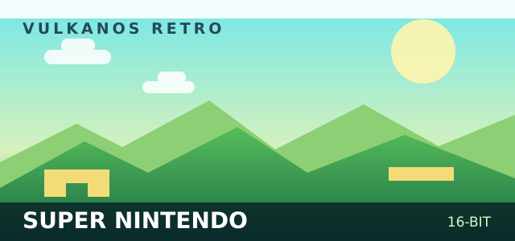
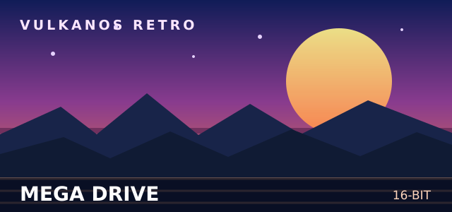
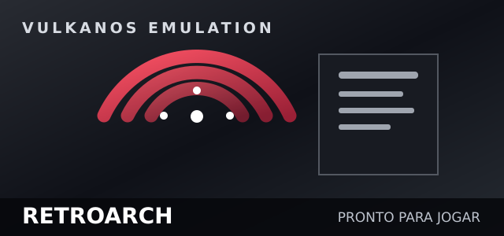
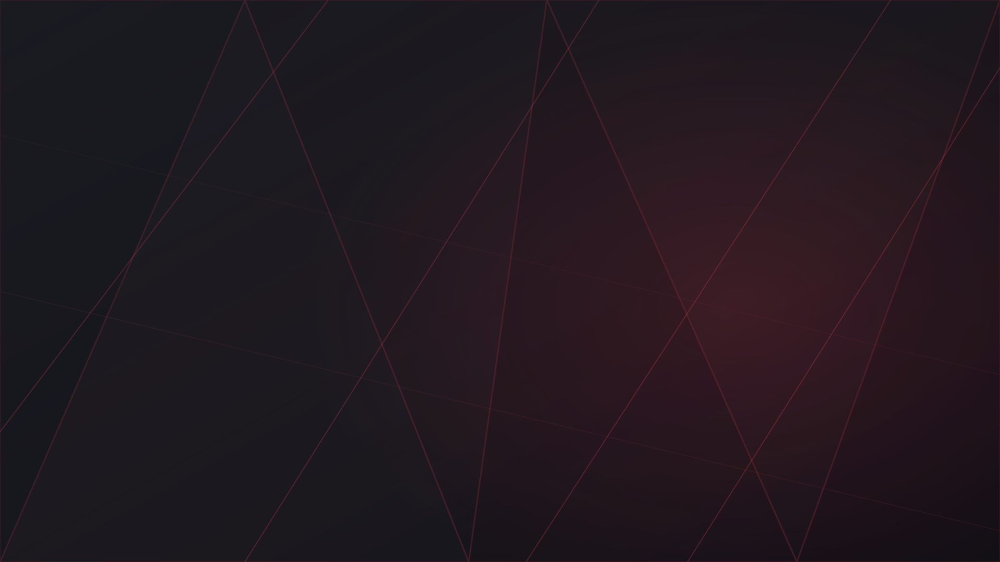

Biblioteca visual
Uma tela inicial com cartões, favoritos e jogos recentes. A lista é preenchida com os jogos Steam e ROMs encontrados no dispositivo.
Uma experiência Linux em desenvolvimento, pensada para reunir jogos de PC, emulação e seus aplicativos em uma interface com espírito de console.
 VULKAN
VULKAN


A proposta é simples: iniciar o PC em uma interface clara, acessar a biblioteca e abrir as ferramentas de jogos sem perder a flexibilidade de um sistema desktop.
Uma tela inicial com cartões, favoritos e jogos recentes. A lista é preenchida com os jogos Steam e ROMs encontrados no dispositivo.
Atalho para o cliente Steam, incluindo modo de interface para controle. A configuração inicial do Steam exige internet.
RetroArch, cores Libretro e ES-DE para organizar jogos clássicos nas pastas do usuário. Nenhuma ROM ou BIOS vem incluída.
Firefox ESR e acesso ao ambiente desktop XFCE para tarefas fora da biblioteca de jogos.
Indicadores de rede, Bluetooth, bateria e dispositivos joystick disponíveis no Linux. O suporte varia conforme o hardware.
Uma base para evoluir o tema, as pastas e a experiência do VulkanOS. O foco atual é validar a interface e o boot em PCs reais.
Tema escuro, vermelho vulcânico, cartões largos e uma navegação pensada para funcionar bem em tela grande.

Cartões dedicados para sistemas clássicos.
Atalho para o RetroArch e seus cores instalados.
A edição PC atual é, honestamente, um Debian 13 (Trixie) enxuto e personalizado com XFCE, componentes de jogos e o dashboard VulkanOS em fase experimental. É o começo do projeto, não um sistema independente concluído.
A build mais recente com o dashboard está disponível como artefato do GitHub Actions. Leia as instruções antes de gravar a imagem.
Imagem amd64 com a nova interface de biblioteca e prévia visual gerada durante a compilação.
Esta é a versão pública inicial, anterior ao dashboard mostrado nesta página. Está preservada como referência.
Estes itens fazem parte dos planos do VulkanOS, mas ainda não estão implementados na Alpha atual.
Assistente de discos e organização da biblioteca em armazenamento separado.
Modo desktop completo com gerenciamento de aplicativos e disco de jogos.
Melhorar detecção, navegação, mapeamento e compatibilidade entre dispositivos.
Levar a identidade e a experiência do projeto ao console próprio.
Ainda não. A Alpha atual é baseada em Debian 13 Trixie com XFCE, ferramentas de jogos e a interface experimental do VulkanOS.
Não. Esta edição é para PCs x86-64 (amd64). Não é uma build ARM para consoles portáteis.
Não. Steam, emuladores e pastas são fornecidos, mas jogos, ROMs e BIOS não são distribuídos. Use apenas conteúdo que você tem direito de utilizar.
Teste primeiro a sessão Live. A instalação pode apagar dados no disco escolhido; faça backup e confira com cuidado o destino. O assistente BOOT/VKROMS ainda não existe.
Há navegação básica por teclado e dispositivos joystick reconhecidos pelo Linux. O suporte universal e o mapeamento automático não estão implementados.
Teste a versão Live em hardware que você possa usar para testes e envie modelo do PC, CPU, GPU, resultado de boot e problemas de rede, som e controles pelo repositório.
Acompanhe o código, os testes e as próximas versões diretamente no GitHub.